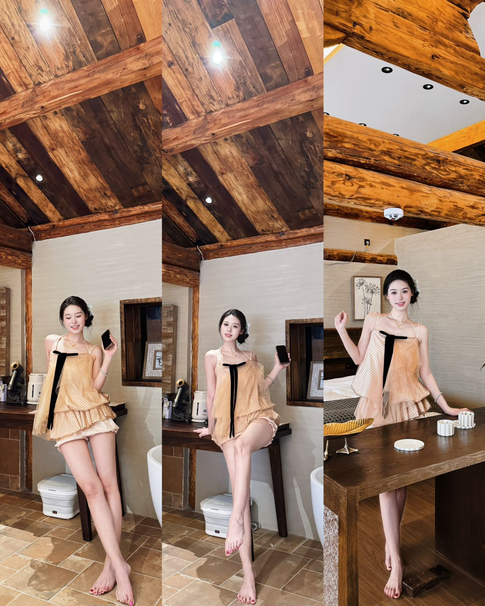
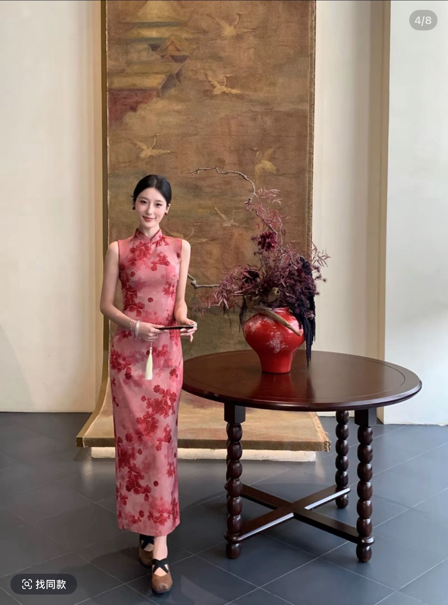
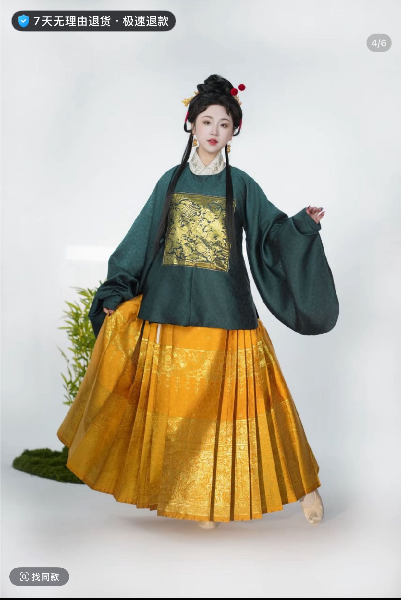
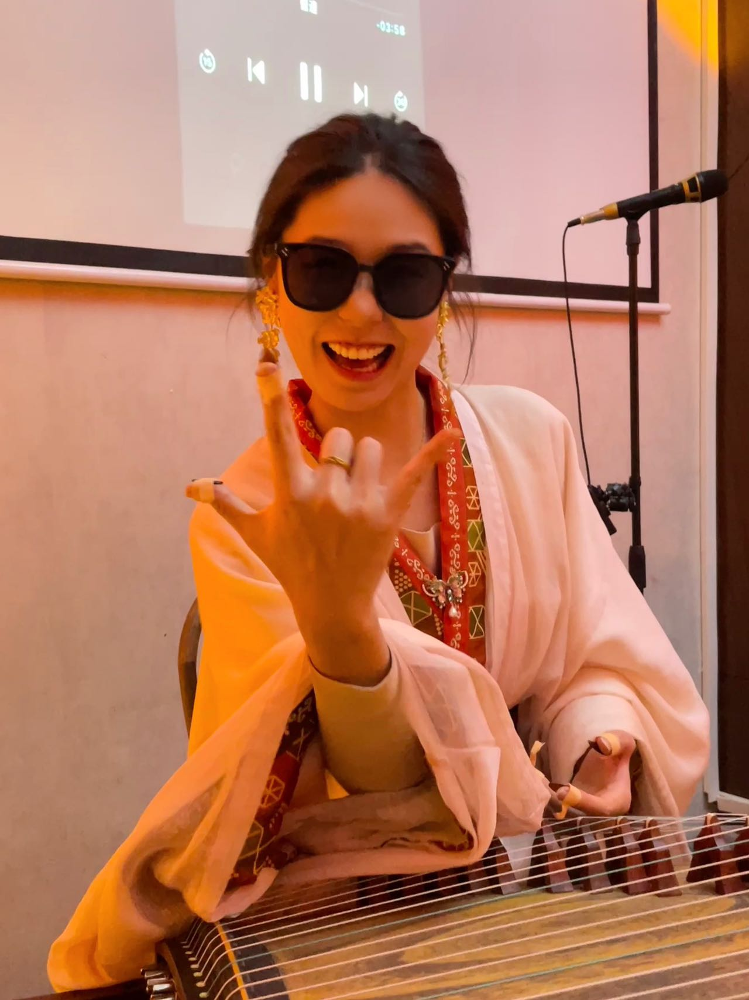
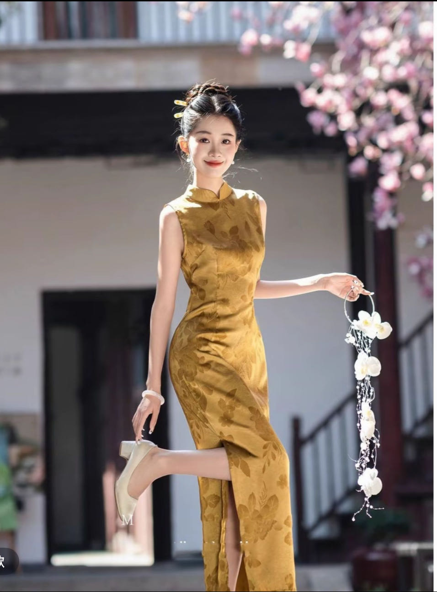
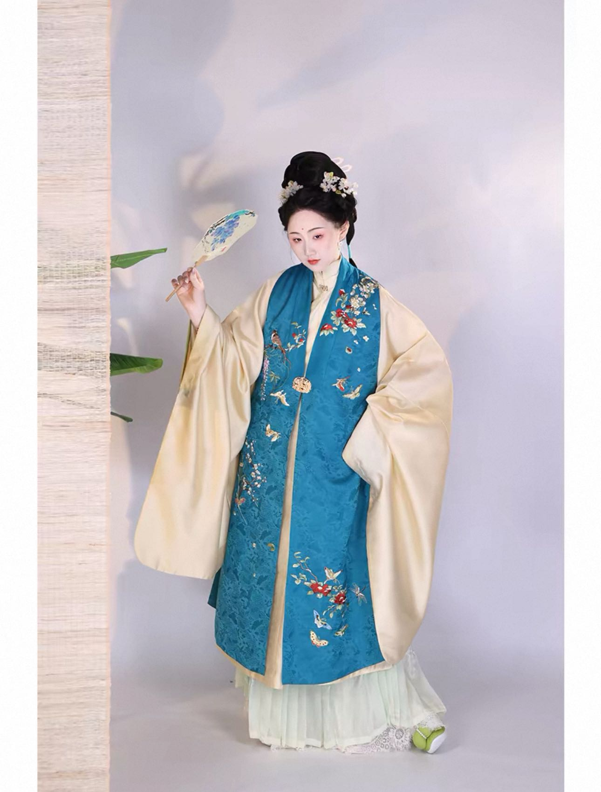
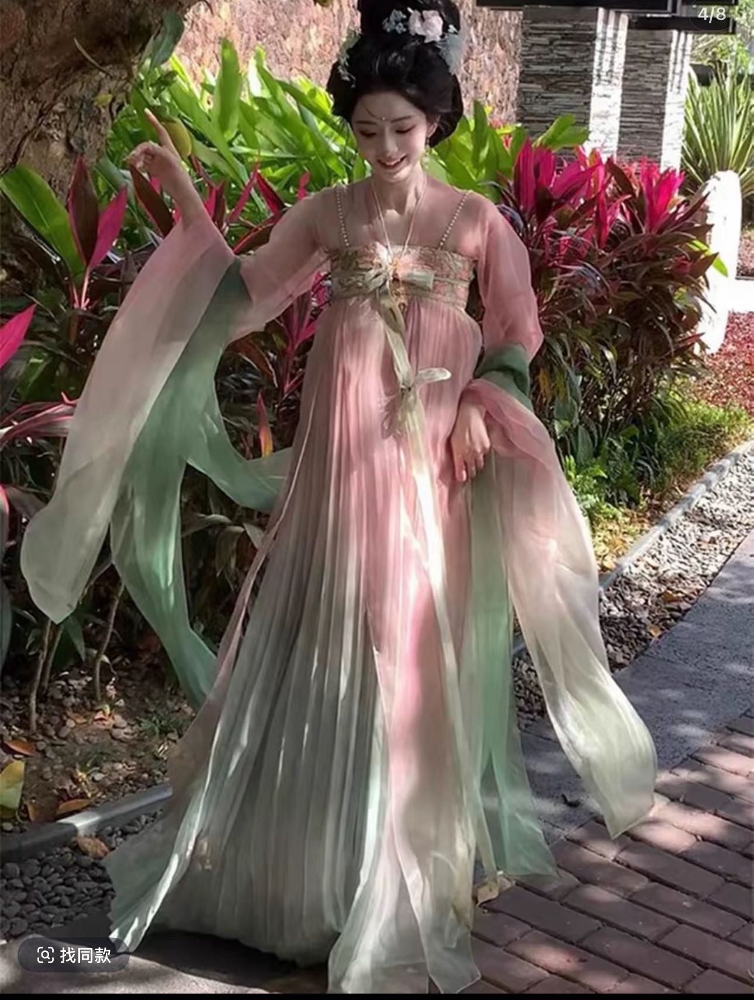
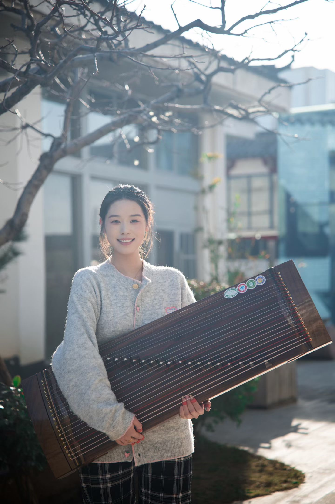

LIVE 02
一人 · 一筝 · 一方意境
传统音色，
当代表达。
不是简单地“安排一段节目”，而是让音乐自然进入活动的空间、流程与情绪。
从曲目节奏到服装颜色，从入场时机到舞台画面，都可以围绕您的活动主题共同确认。
筝LIVE
ART
ART
SELECTED LIVE MOMENTS
演出影像
点击播放，感受真实现场。
建议在有声音的环境中观看。
FEATURED PERFORMANCE
古筝现场 · 精选片段
真实演出记录 / 可全屏观看
LIVE 03
古筝演奏记录
LIVE 04
活动现场片段
TAILORED FOR THE OCCASION
为不同现场而奏
每一种活动，都有自己的呼吸。
演出内容与呈现方式可随场景调整。
WEDDING
婚礼 · 雅集
迎宾、暖场、仪式或宴会节点，增添东方仪式感。
长相守 · 喜庆 · 温柔BANQUET
高端宴会 · 私享晚宴
克制而有质感的背景演奏，让交流与氛围相得益彰。
雅致 · 从容 · 有分寸BRAND EVENT
品牌活动 · 商场庆典
结合开幕、发布、节庆主题，形成鲜明现场记忆点。
大气 · 醒目 · 可传播CULTURAL SPACE
文化空间 · 艺术活动
适配展览、茶会、国风主题与沉浸式空间表演。
东方 · 留白 · 沉浸STYLING OPTIONS
服装造型，
也是舞台语言。
礼服、旗袍、汉服与主题妆造均可挑选。可依据活动主视觉、场地灯光与品牌色，沟通选择更贴合现场的造型方向。



SELECTABLE WARDROBE
小雨的衣柜
为不同主题准备的造型参考。确定活动调性后，可从现有服装中沟通挑选。




COLLABORATION FLOW
合作很简单
先了解现场，再确定最合适的表达。
无需先做复杂准备。
- 01
告知活动
日期、城市、场地与活动类型
- 02
确认方向
演出时长、曲目气质与流程节点
- 03
选择造型
结合主题、空间与品牌视觉搭配
- 04
抵达现场
提前沟通设备与进场衔接细节

XIAOYUABOUT THE ARTIST
小雨老师
专业古筝演奏 / 商业活动表演
自幼习筝，接受系统专业启蒙教育，并深耕曹派古筝技法。现为国家民族乐器三级演奏员、河南省音乐家协会古筝专业委员会会员，拥有丰富的舞台演奏经验。
从品牌活动、驻场演出到婚礼庆典、茶楼雅集与私人定制，重视每一次现场的节奏、氛围与合作配合；曲目与妆造均可围绕活动主题沟通选择。